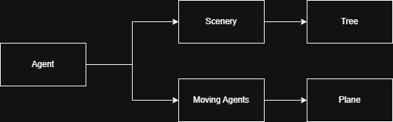
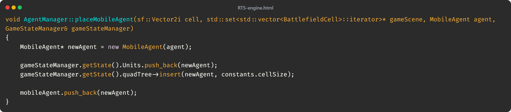
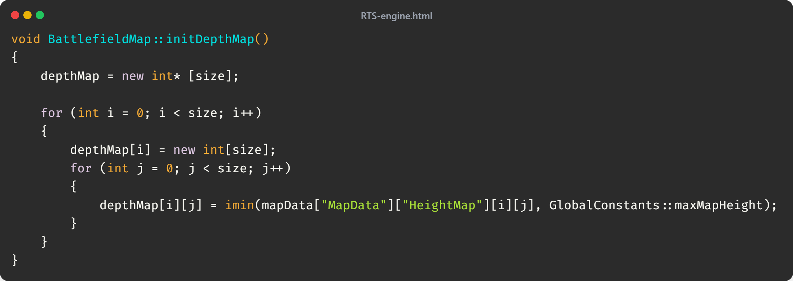
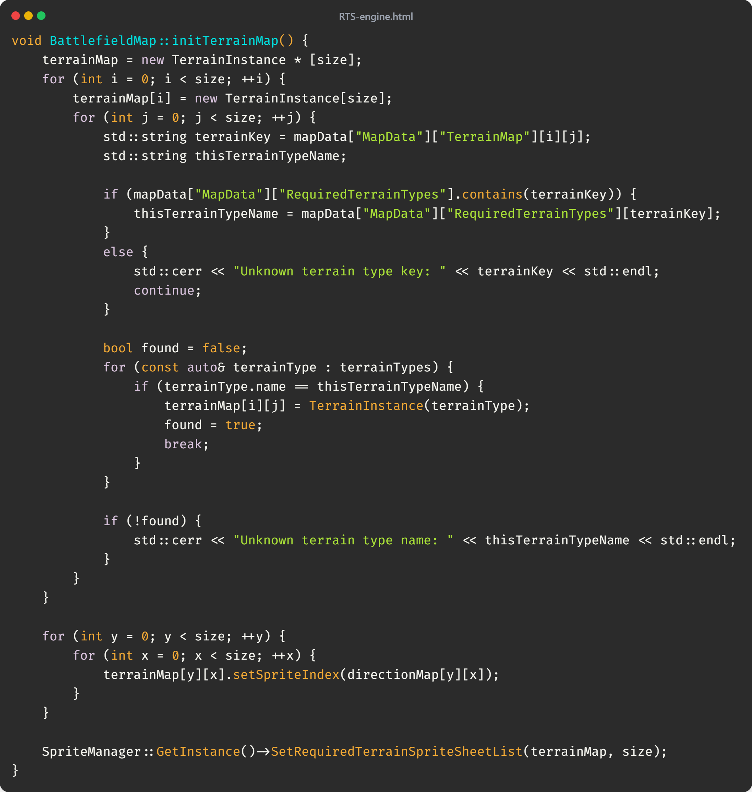
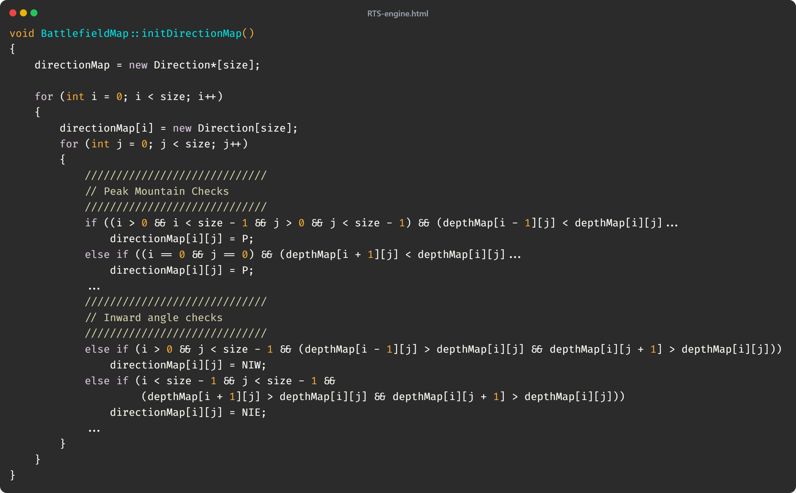
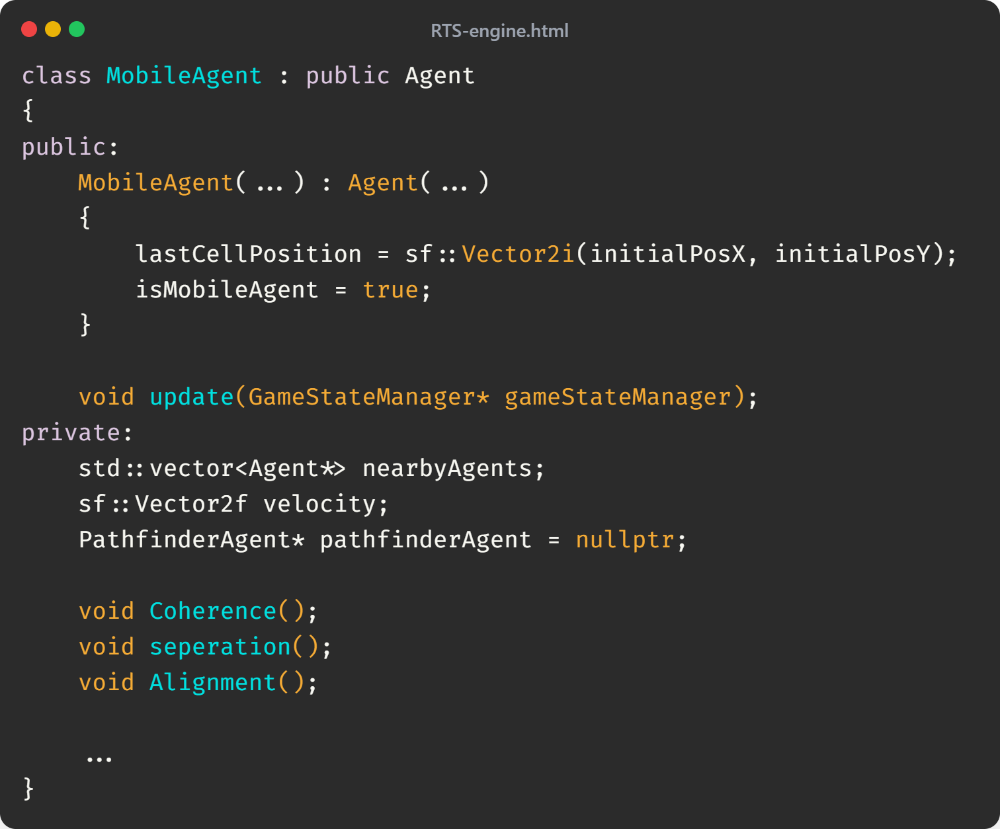

RTS Engine
Creating a lightweight RTS Engine
This was my first group project, working with a team of volunteer developers to build an RTS game engine using the SFML library and C++. I was primarly responsible for the agents and rendering systems. Throughout development alot of members of the team came and went, however i worked with the team lead throughout.
GitHub
Being my first group project, this is when i first learnt how to use gits primary colloboration features. Our team used github to host our repository, and each person work was done in a seperate branch.
I spent the first few weeks of the project primarly focusing on how to utlize and navigate git, learning alot of the command and setting up the different requirements.
Agents
.png)
My first large task was building the agents system. The two main parts of this task was the agents themselves and the Agent Manager. The agents changed alot throughout development, but the core concept using inheritance to place agents any where on the world stayed the same.
Every entity in the world is an agent; the trees, the planes, and there where intenetions to extend the engine to have interactable agents such as structures. Some of these could move and others couldnt, and there was alot of unique functionality for each.
For this reason i decided to use a hiearchy of inheritance for each different agent.
These are then inserted into the data structure another programmer developed, a quad tree, where they can be referenced to render or update.
Isometric Terrain
I was also responsible for building the isometric terrain system. The project already had utility functions to convert an isometric world space to screen space and vise versa, but we needed a system to fill the quadtree with references to terrain texture coordinates.
This came with alot of steps. After alot of iteration we decided to use JSON to store the map data, using a terrain height array and a terrain type array. To build this JSON file i used a small python tool to procedually generate the heights and terrain types, which could have been used more to create numerous map types.
Loading the height maps:
Loading the terrain types wasnt as simple however. I decided to use a hashmap which lets me access different terrain spritesheets using a key which is what is stored in the JSON file.
The last part was figuring out which direction of the spritesheet to use, having to work out what the heights out surrounding terrains tiles where and choosing the corresponding direction enum accordingly. Most of this is just if statements so most code is removed for the sake of keeping the page clean.
If i was to rework this section or make another RTS engine, i would likely choose to use an orthographic 3D system, having a generated height map of nodes and then connecting them together to make a mesh and blend textures to get smoother terrains.
Boids
As the video shows, there are numerous planes following a master plane. This was implemented with a combination of A* pathfinding and boids. Whilst another programmer worked on implementing pathfinding, i was assigned to work on the boids implementation.
The boid is just another inherited Agent, just with the added complexity of AI. the PathfinderAgent is what the other programmer was working on, all i had to do was create an implementation for numerous objects to follow it.
Unfortunatly we ran out of developemnt time, however we where planning on expanding this system to use a "Formation" system, featured in most RTS games, where each boid would have a pathfinding of sort, and if i was to expand the project myself i would work on implementing such a feature smoothly.